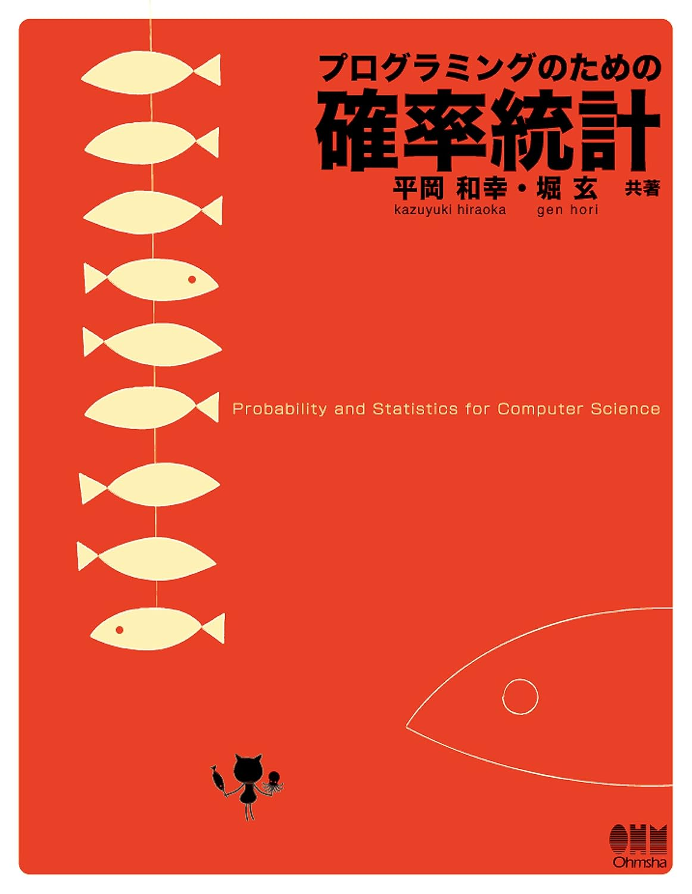
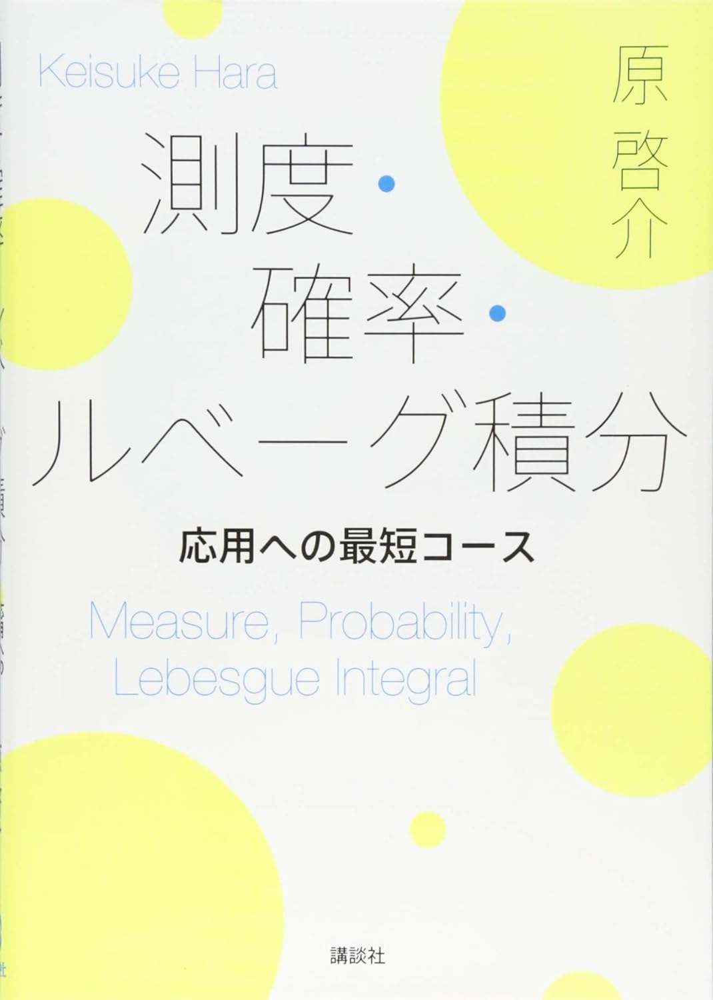
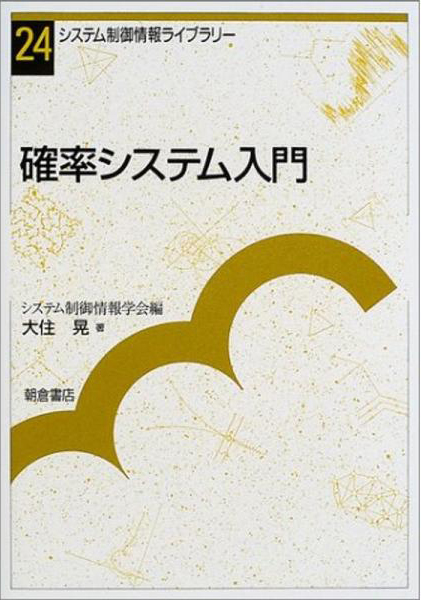

確率統計学
確率統計のおすすめ参考書です。目的に応じて学んでいきましょう。

プログラミングのための確率統計 平岡和幸・堀玄著
この本は普通の教科書ではない。1つの内容に対してよくあるQ&A的なものがいくつもついていて、中にはウケ狙いとしか思えない素朴すぎる質問まである。確率統計を勉強していて疑問に思うところがあったらこの本で該当部分を探す。そのような辞書的な使い方も優れている本。「プログラミングのための」とうたっているが、確率統計を純粋に勉強したい学習者も必携の1冊。

測度・確率・ルベーグ積分 応用への最短コース 原啓介著
自分が学部生の頃にこの本がなかったことが悔やまれる。内容は題名の通りで「測度」を使えるようになるまでの最短の道を提示してくれる。そのため余分な内容をバサバサ削っているが、こういった本は何か目標意識をもって勉強する際には非常に有用である。最短である反面、扱われる例がやや少ない印象を受けるが、その際は他の本を参考にしながら進めばよい。

確率システム入門 大住晃著
この本はいわゆる「制御理論」の教科書として書かれている本ではあるが、その際に必要な「確率過程」の説明が秀逸であるため確率統計のおススメ本としてピックアップした。確率過程の数学は厳密にやろとするとかなり泥沼にはまるが、この本はその難点を絶妙なバランスで易しく解説してくれている。個人的には修士課程で一番お世話になった本といっても過言ではないかもしれない。